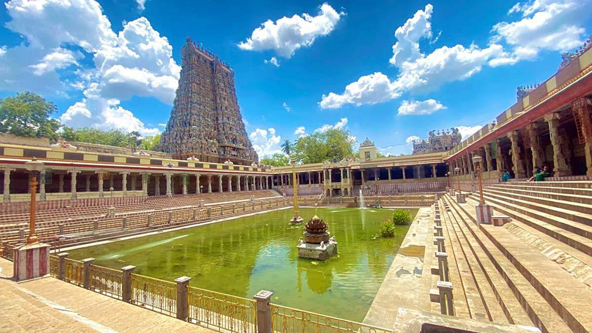
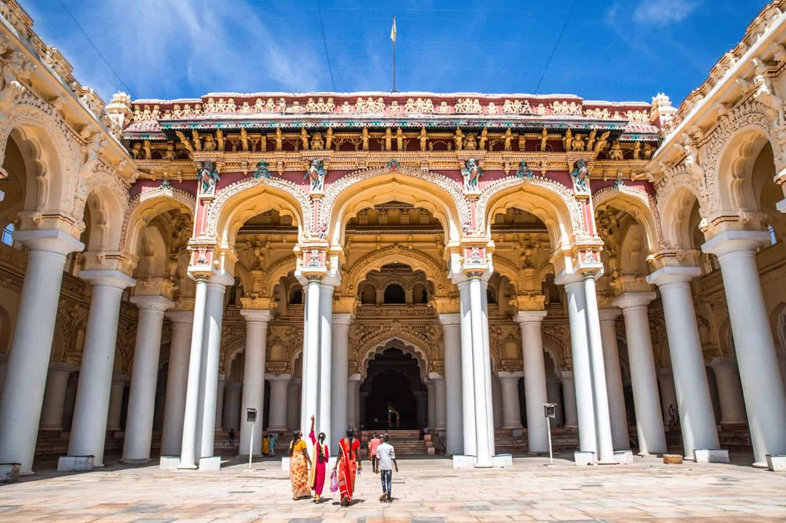
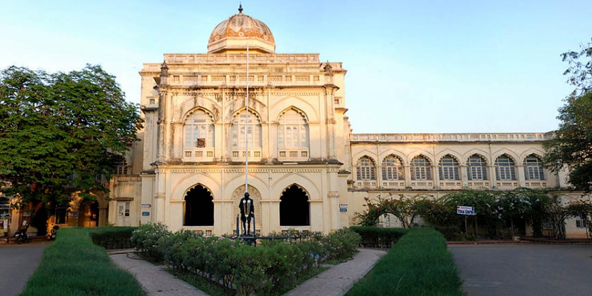
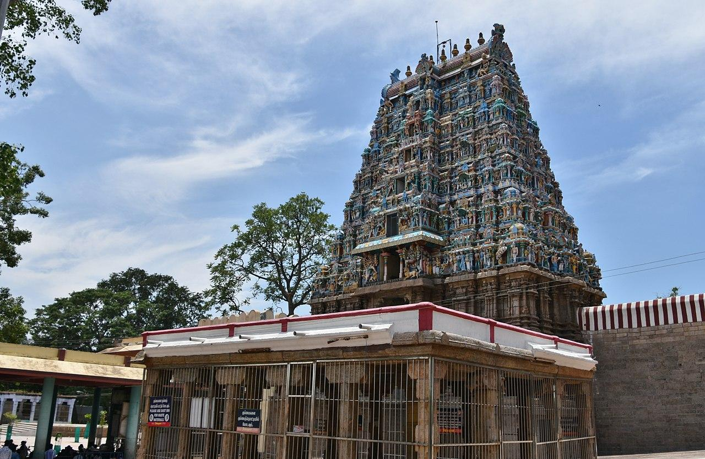
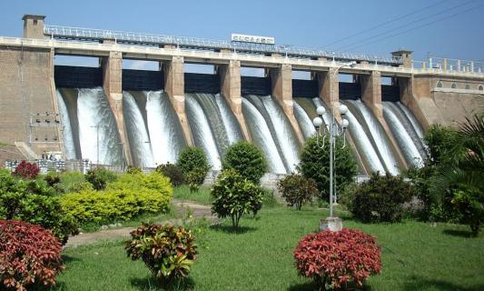
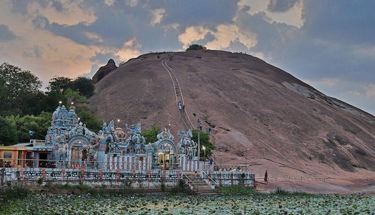

Welcome to Madurai
Explore the beauty of Madurai with ancient temples, historical monuments, transport facilities, nearby hotels, hospitals and emergency services.
Explore Map
Explore the beauty of Madurai with ancient temples, historical monuments, transport facilities, nearby hotels, hospitals and emergency services.
Explore Map
Discover the most popular places to visit in Madurai.

One of India's most famous temples, known for its magnificent Dravidian architecture.

A historic palace built in the 17th century, famous for its grand pillars and architecture.

A museum showcasing the life, history and contributions of Mahatma Gandhi.

A beautiful temple dedicated to Lord Vishnu, surrounded by green hills and peaceful nature.

A popular tourist attraction known for its scenic reservoir, gardens and relaxing atmosphere.

An ancient hill famous for Jain caves, rock carvings and panoramic views of Madurai.
Easy and convenient transportation across Madurai.
Government and private buses connect Madurai with all major cities and towns.
Madurai Junction provides regular train services across Tamil Nadu and India.
Ola, Uber and local taxi services are available throughout the city.
Best hotels to stay during your visit.
A premium hotel offering luxury rooms, fine dining and excellent hospitality.
A beautiful heritage hotel known for its traditional architecture and peaceful stay.
A modern hotel with comfortable rooms and quality services for travelers.
Emergency medical services available nearby.
24×7 multi-speciality hospital with advanced medical facilities.
Well-equipped hospital offering modern healthcare services.
A leading healthcare institution providing quality treatment and emergency care.
Know some interesting facts about Coimbatore.
Madurai
Tamil
Meenakshi Amman Temple & Jasmine Flowers
Important helpline numbers for your safety.
100
108
101
View Madurai location on Google Maps.